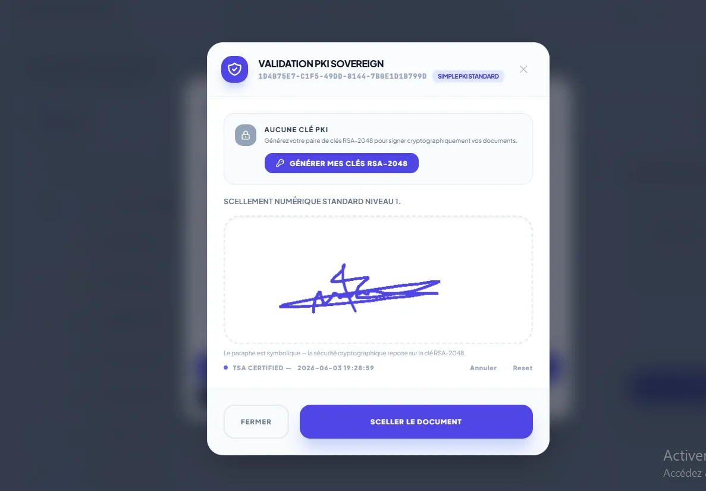
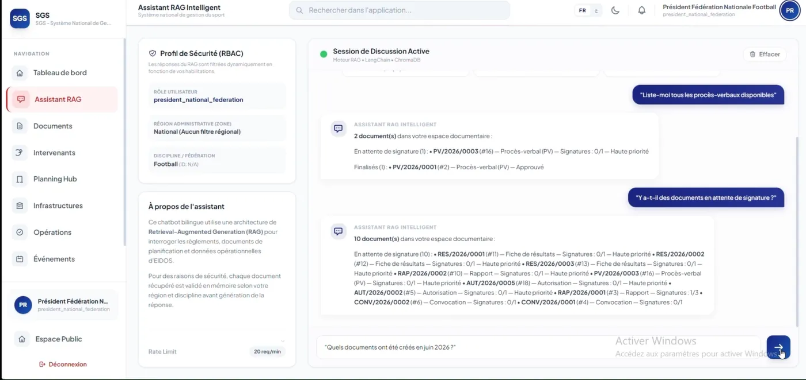

Eidos
Plateforme de gestion pour les fédérations sportives tunisiennes, développée à plusieurs. Ma part : le service documentaire, la chaîne OCR qui lit les pièces scannées, l'affinage du modèle de langage qui en extrait les champs, et le harnais qui mesure ce modèle.
- 01Une chaîne OCR bilingue, français et arabe, dont la sortie brute est reprise par un petit modèle affiné et servi en local pour en tirer des champs structurés, là où des expressions régulières auraient cédé au premier changement de mise en page.
- 02Une signature électronique que n'importe qui peut vérifier sans compte, parce que celui qui reçoit le document est justement celui qui n'est pas dans le système.
- 03Un assistant conversationnel dont le périmètre est filtré avant que le modèle ne voie les données, et non demandé poliment dans son prompt.
72 tests automatisés · OCR à 98,6 % · 65 documents d'évaluation

Comment j'ai vérifié que le modèle affiné tenait
L'entraînement n'avait pas de jeu de validation : la courbe de perte ne distingue pas un modèle qui apprend d'un modèle qui retient. J'ai donc mesuré le modèle de l'extérieur, sur celui qui est réellement servi, avec soixante-cinq documents répartis en six suites, dont une sonde de mémorisation et une suite en arabe que le corpus ne contient pas.
Résultat : le schéma de sortie est respecté dans 100 % des cas contre 27,7 % pour le modèle de base, sans aucun avantage sur les documents vus à l'entraînement, et les six sondes de mémorisation ne rappellent rien. Le harnais a surtout montré le défaut : le modèle s'abstient mal, ce qui venait du corpus et non du modèle.
Comment les droits s'appliquent avant le modèle
La passerelle transmet au service l'identité de l'appelant, son rôle et sa zone, et ces en-têtes restreignent la recherche avant que le modèle ne voie quoi que ce soit. Les droits ne sont pas une consigne donnée dans un prompt : un modèle à qui l'on demande gentiment de ne rien divulguer finit toujours par divulguer.
Le fournisseur de modèle est enfichable. Par défaut le service appelle gpt-4o-mini, choisi pour sa tenue en français et en arabe ; une variable d'environnement bascule sur un modèle local servi par Ollama, au prix du temps de réponse.
